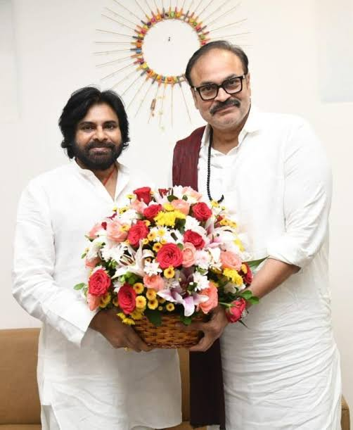
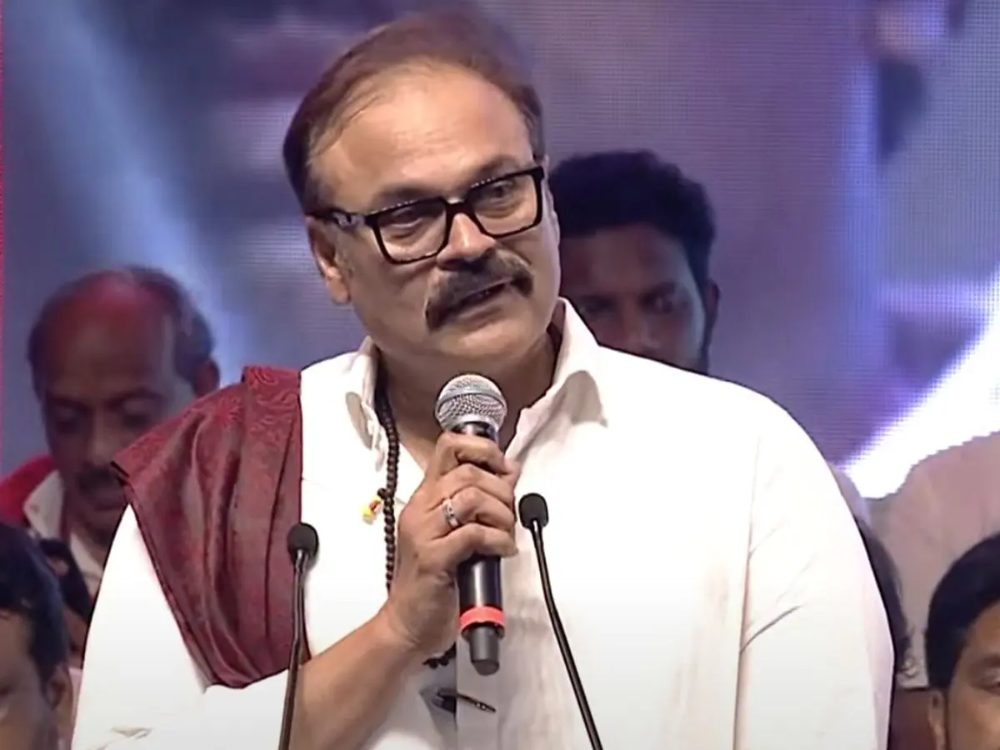

🌿 నాగబాబుకు కీలక పదవి.. ఏకంగా కేబినెట్ ర్యాంక్! ఏపీ గ్రీన్ ఎగ్జిక్యూటివ్ కమిటీ చైర్పర్సన్గా నియామకం

ఆంధ్రప్రదేశ్ ప్రభుత్వం ఎమ్మెల్సీ కొణిదెల నాగబాబుకు కీలక బాధ్యతలు అప్పగించింది. రాష్ట్రంలో పచ్చదనాన్ని పెంచడంతో పాటు పర్యావరణ పరిరక్షణకు మరింత ప్రాధాన్యత ఇచ్చేలా ఏర్పాటు చేసిన ఏపీ గ్రీన్ (AP-GREEN) ఎగ్జిక్యూటివ్ కమిటీ చైర్పర్సన్గా నాగబాబును నియమించింది. ఈ మేరకు పర్యావరణ, అటవీ శాఖ ప్రభుత్వం జీవోఆర్టీ నంబర్ 93ను జారీ చేసింది. ఈ పదవికి నాగబాబుకు కేబినెట్ ర్యాంక్ హోదా కల్పించడం ఇప్పుడు రాజకీయ వర్గాల్లో ఆసక్తికరంగా మారింది.
ఏపీ ప్రభుత్వం రాష్ట్రంలో పచ్చదనం, అటవీ విస్తీర్ణాన్ని గణనీయంగా పెంచేందుకు ఏపీ గ్రీన్ కార్యక్రమాన్ని మరింత బలోపేతం చేయాలని నిర్ణయించింది. ఇందులో భాగంగా సంస్థ నిర్వహణను సమర్థవంతంగా కొనసాగించేందుకు గవర్నింగ్ బోర్డు, ఎగ్జిక్యూటివ్ కమిటీతో పాటు జిల్లా స్థాయిలో డిస్ట్రిక్ట్ గ్రీన్ డెవలప్మెంట్ ఏజెన్సీలను ఏర్పాటు చేసింది. ఈ వ్యవస్థ ద్వారా రాష్ట్రవ్యాప్తంగా పర్యావరణ పరిరక్షణ, మొక్కల పెంపకం, అటవీ అభివృద్ధి వంటి కార్యక్రమాలను సమన్వయంతో చేపట్టే అవకాశం ఉంటుంది.

నాగబాబుపై కీలక బాధ్యత:
ఎగ్జిక్యూటివ్ కమిటీ చైర్పర్సన్గా నాగబాబుకు ముఖ్యమైన బాధ్యతలు అప్పగించనున్నారు. రాష్ట్రంలో పచ్చదనం పెంపు కోసం చేపట్టే కార్యక్రమాలను సమన్వయం చేయడం, వాటి అమలును పర్యవేక్షించడం, సంబంధిత శాఖలు మరియు సంస్థల మధ్య సమన్వయం తీసుకురావడం వంటి అంశాల్లో ఆయన కీలక పాత్ర పోషించనున్నారు. జిల్లాల స్థాయిలో చేపట్టే గ్రీన్ కార్యక్రమాలను కూడా మరింత సమర్థవంతంగా ముందుకు తీసుకెళ్లే బాధ్యత ఈ కమిటీపై ఉంటుంది.
ప్రభుత్వం నిర్దేశించిన లక్ష్యాల ప్రకారం.. 2047 నాటికి ఆంధ్రప్రదేశ్ భౌగోళిక విస్తీర్ణంలో అటవీ, చెట్ల కవరేజీని 50 శాతానికి పెంచడం ఏపీ గ్రీన్ ప్రధాన ఉద్దేశంగా ఉంది. ప్రస్తుతం ఉన్న పచ్చదనాన్ని మరింత పెంచేందుకు పెద్ద ఎత్తున మొక్కలు నాటడం, వాటి సంరక్షణ, అటవీ ప్రాంతాల అభివృద్ధి, పర్యావరణ పరిరక్షణ చర్యలను వేగవంతం చేయాలని ప్రభుత్వం భావిస్తోంది.

2047 లక్ష్యమేంటి?
రాష్ట్రంలో పచ్చదనం పెరగడం వల్ల పర్యావరణ సమతుల్యతను కాపాడటంతో పాటు వాతావరణ మార్పుల ప్రభావాన్ని తగ్గించేందుకు కూడా ప్రయోజనం ఉంటుందని ప్రభుత్వం భావిస్తోంది. పట్టణాలు, గ్రామాలు, రహదారుల వెంట, ప్రభుత్వ స్థలాల్లో, అటవీ ప్రాంతాల్లో పచ్చదనాన్ని పెంచే చర్యలకు ప్రాధాన్యత ఇవ్వనుంది. మొక్కలు నాటడమే కాకుండా వాటిని సంరక్షించి, దీర్ఘకాలికంగా పచ్చదనం పెరిగేలా చర్యలు తీసుకోవడం ఏపీ గ్రీన్ కార్యక్రమంలో కీలకంగా ఉండనుంది.
జిల్లా స్థాయిలో డిస్ట్రిక్ట్ గ్రీన్ డెవలప్మెంట్ ఏజెన్సీలను ఏర్పాటు చేయడం ద్వారా స్థానిక అవసరాలకు అనుగుణంగా కార్యక్రమాలను రూపొందించే అవకాశం ఉంటుంది. దీంతో రాష్ట్ర స్థాయి లక్ష్యాలను జిల్లా స్థాయిలో అమలు చేయడం సులభతరం కానుంది.
ముఖ్యమైన ముఖ్యాంశాలు:
- కీలక నియామకం: ఎమ్మెల్సీ కొణిదెల నాగబాబు ఏపీ గ్రీన్ ఎగ్జిక్యూటివ్ కమిటీ చైర్పర్సన్గా ఎంపిక.
- కేబినెట్ ర్యాంక్: ఈ నియామకానికి సంబంధించి జీవోఆర్టీ నంబర్ 93 జారీ, కేబినెట్ ర్యాంక్ హోదా కల్పన.
- విజన్ 2047: 2047 నాటికి రాష్ట్ర భౌగోళిక విస్తీర్ణంలో అటవీ, చెట్ల కవరేజీని 50 శాతానికి పెంచడమే ప్రధాన లక్ష్యం.
- జిల్లా స్థాయి ఏజెన్సీలు: పర్యవేక్షణ కోసం డిస్ట్రిక్ట్ గ్రీన్ డెవలప్మెంట్ ఏజెన్సీల ఏర్పాటు.
మొత్తంగా చూస్తే.. ఎమ్మెల్సీ కొణిదెల నాగబాబుకు ఏపీ ప్రభుత్వం అప్పగించిన ఈ బాధ్యత ప్రాధాన్యతను సంతరించుకుంది. ముఖ్యంగా కేబినెట్ ర్యాంక్ హోదాతో ఏపీ గ్రీన్ ఎగ్జిక్యూటివ్ కమిటీ చైర్పర్సన్గా నియామకం కావడంతో ఈ పదవిపై ఆసక్తి నెలకొంది. 2047 నాటికి రాష్ట్రంలో 50 శాతం గ్రీన్ కవర్ సాధించాలనే లక్ష్యాన్ని చేరుకోవడంలో నాగబాబు నేతృత్వంలోని కమిటీ ఎంతవరకు విజయవంతమవుతుందనేది ఇప్పుడు ఆసక్తికరంగా మారింది.
← హోమ్ పేజీకి వెళ్లండి